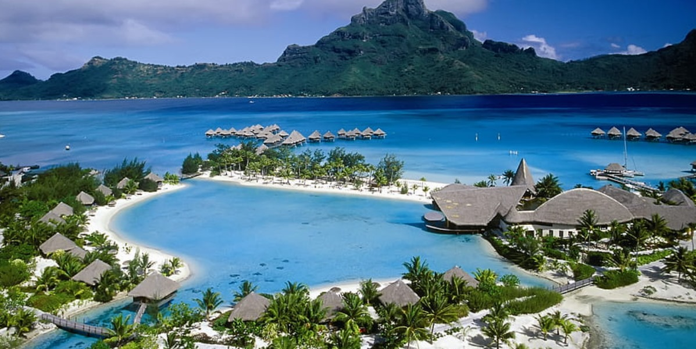

The Andaman and Nicobar Islands stretch over 800 kilometers from north to south, forming a long, narrow chain of islands. These islands are a part of the extensive undersea mountain range, which also forms the peaks of Indonesia. Geologically, they are part of the same landmass that includes the Arakan Yoma of Burma and Sumatra of Indonesia. The geographic positioning of the islands is particularly strategic, as they lie closer to Southeast Asia than to the Indian mainland. Port Blair, the capital of the Andaman Islands, is approximately 1,200 kilometers away from the eastern coast of India but only around 150 kilometers from Indonesia.
The islands are divided into two groups: the Andaman Islands and the Nicobar Islands. The Andamans lie to the north, while the Nicobar Islands are located to the south. Separating the two groups is the Ten Degree Channel, which is about 150 kilometers wide. This channel divides the archipelago into distinct ecological zones, both of which have unique characteristics and appeal to travelers.
The Andaman and Nicobar Islands are home to some of th e most beautiful beaches in the world. Radhanagar Beach on Havelock Island is consistently ranked among the best beaches globally, known for its powdery white sand and the emerald-blue water that stretches out to the horizon. The calm waters surrounding the islands provide the perfect setting for water activities such as snorkeling, scuba diving, and sea walking, offering a glimpse of vibrant coral reefs, colorful fish, and even sea turtles.
Coral reefs surround much of the Andaman Islands, making it a haven for marine life and a paradise for divers. The coral reefs here are among the richest in the world, home to over 560 species of coral. The reefs protect the coastlines and serve as nurseries for various species of fish and other marine creatures. Additionally, the waters surrounding the islands are part of the Indo-Pacific region, making them rich in biodiversity, with dolphins, dugongs, and even whales being sighted in the deeper waters.
Apart from its picturesque beaches, the Andaman and Nicobar Islands are covered in dense tropical rainforests that make up nearly 86% of the total land area. These forests are rich in flora and fauna, with many species that are endemic to the islands. The tropical evergreen and deciduous forests provide shelter to a variety of wildlife, including the Andaman wild pig, saltwater crocodiles, and the Nicobar pigeon, which is the state bird of the islands.
The islands also boast a fascinating range of avian species, making it a bird watcher’s paradise. With over 270 species of birds, the islands attract ornithologists from around the world. Many of these birds, like the Andaman woodpecker and Andaman teal, are endemic to the islands and cannot be found anywhere else on Earth.
The islands are also rich in cultural history. The Andaman and Nicobar Islands have been home to several indigenous tribes for thousands of years, including the Great Andamanese, Onge, Jarwa, and Sentinalese people. These tribes have remained largely isolated from modern civilization and are a significant part of the island’s identity. Strict regulations ensure that their way of life is preserved, and much of the Nicobar Islands remain off-limits to visitors to protect these communities and their environment.
The islands also have a dark yet significant history tied to India’s freedom struggle. The Cellular Jail in Port Blair, often referred to as “Kala Pani,” was a colonial prison used by the British to exile Indian freedom fighters. Today, it stands as a national monument, reminding visitors of the sacrifices made during the Indian independence movement.
Welcome to Discover Islands of India, your ultimate guide to exploring the stunning islands of India! From the turquoise waters of the Andaman and Nicobar Islands to the serene backwaters of Lakshadweep, India boasts a variety of beautiful islands. ... rich in natural beauty, culture, and adventure. Our team is passionate about showcasing the diversity and beauty of India's islands, offering insights on the best places to visit, stay, and experience. Whether you’re a solo traveler, a couple on a romantic getaway, or a family seeking adventure, our guides are designed to help you plan an unforgettable trip. Join us as we explore the breathtaking islands of India and embark on a journey like no other!
See More| E-mail: | rudraprataptiwari786@gmail.com |
| Police: | 100 |
| Fire station: | 101 |
| Ambulance: | 03192 232102 |
| Blood Bank: | 03192 230628 |
| Disaster: | 1070/03192 238881100 |